João Gabriel Bezerra Soares
Renally dos Santos Aciole
Suemilton N. Gervazio
Resumo
Este trabalho analisa a presença da matemática nas construções arquitetônicas da cidade de Esperança–PB, com base em uma metodologia experimental e investigativa. Inicialmente, realizou-se uma pesquisa bibliográfica sobre as manifestações matemáticas em grandes obras históricas e mundiais, como as Pirâmides de Gizé e o Taj Mahal. Em seguida, foram estudadas quatro edificações locais por meio de visitas técnicas, observações e registros fotográficos. As construções analisadas foram: Sobrado dos Delgado, Escola Estadual Irineu Joffily, Mercado Público Municipal e o Hospital Municipal de Esperança. Cada uma apresentou elementos específicos que evidenciam a aplicação de conceitos matemático. O que demonstrou que os conceitos matemáticos estão profundamente interligados à arquitetura, evidenciando a importância da geometria e da etnomatemática no processo de construção das edificações. Os resultados foram organizados e disponibilizados em um site educacional, com o objetivo de divulgar o conhecimento adquirido à comunidade. A pesquisa reforça o papel da matemática no cotidiano e destaca sua relevância para a formação crítica e científica dos estudantes, promovendo uma visão mais ampla e aplicada dessa área do saber.
Palavras-chave
Matemática; Construção Civil; Engenharia.
Introdução
A matemática é uma linguagem utilizada em todo o mundo desde tempos remotos, de modo que desempenha um papel fundamental na organização e funcionamento de diversas atividades cotidianas. Faz-se uso de conceitos matemáticos constantemente, seja para calcular trocos ou medir distâncias, até aplicações mais complexas - como planejamento financeiro, construção civil e análise de dados.
A finalidade de abordar o presente tema, está em elucidar o frequente questionamento de quando se usa a matemática no dia-a-dia. Assim, este artigo visa desenvolver a utilização empírica de cálculos, entrelaçados em práticas culturais – como artesanato e construções –, na economia, no desenvolvimento de tecnologias e no aprendizado dos jovens. Fazendo uma releitura de Policarpo (2018), o primeiro conceito a ser abordado é o da etnomatemática, um conceito que surgiu na década de 1970, mas cujas práticas são tão antigas quanto a própria civilização. Civilizações pré-colombianas, por exemplo, já realizavam conhecimentos matemáticos para registro de eventos e fenômenos, ilustrando como a matemática sempre esteve presente nas atividades humanas. Nessa mesma linha de raciocínio, D’Ambrosio (1996) indica que a etnomatemática demonstra que o conhecimento "oficial" não é necessário para construir, medir, contar ou realizar outras tarefas práticas de sobrevivência. A matemática está inserida em práticas culturais e cotidianas, como o artesanato e a agricultura, onde conceitos matemáticos são aplicados de maneira intuitiva.
É de extrema importância que as manifestações matemáticas sejam relacionadas ao conteúdo acadêmico, facilitando o entendimento e evitando barreiras. Feitosa, G. W. e Dal-farra, A. R (2024, P.3) permite afirmar que, percebe-se hoje no Brasil um desinteresse por parte dos jovens brasileiros que cursam o ensino médio em relação a carreiras que envolvem áreas de exatas, como engenharia civil, por exemplo. Ainda segundo esses últimos autores, entende-se que alunos do ensino médio, após exposições dialogadas sobre a atuação real dos profissionais da área de exatas relacionadas a engenharia, obtiveram um pequeno aumento da taxa de interesse de cursos superiores dessa área em relação a taxa anterior obtida sem nenhum tipo de interferência.
Além dessa aplicação na visão educacional, é importante observar essas relações na formação dos indivíduos para o mercado de trabalho e sociedade em geral. De acordo com Spacek, I. K. e Ortigara, V (2022, P. 4) entende-se que a compreensão da matemática, bem como a sua relação com a vida do indivíduo, são fundamentos importantes para entender a finalidade dos processos educativos formais e que esses processos ajudam a entender os limites e possibilidades que influenciam toda a formação do indivíduo.
Desse modo, percebe-se que a utilização prática da matemática no cotidiano não é sempre facilmente transferida para o ambiente escolar. Existem alunos que dominam melhor a matemática habitual, mas não conseguem relacioná-la aos conteúdos matemáticos formais ensinados na escola, e vice-versa. Conforme Giardinetto (1999), o conhecimento matemático adquirido por meio do trabalho ou da atividade prática está determinado por uma lógica prático-utilitária, que garante a eficácia da resposta em um contexto específico. O cálculo do troco em uma transação, por exemplo, deve ser preciso e imediato, sem margem para equívocos. Esse conhecimento, no entanto, é na maioria das vezes aprendido de forma implícita, sem uma reflexão consciente sobre as concepções matemáticas envolvidas.
Assim, contextos mercadológicos revelam uma manifestação matemática importante, como descrito por Heller (2002), que relaciona o consumismo à alienação social, ou seja, ao realizar transações financeiras, o indivíduo utiliza cálculos matemáticos de forma prática e funcional, mas muitas vezes sem uma consciência crítica do processo. Conforme Giardinetto (1999) a matemática do cotidiano surge como uma ferramenta essencial, por exemplo, para calcular o troco em compras ou avaliar preços e descontos, mas o caráter exploratório do sistema capitalista impõe uma lógica autoritária na qual a resposta correta é determinada por exigências externas.
Em síntese, a matemática está presente em muitos aspectos da vida, indo além da sala de aula, se estendendo por toda abrangência da vida. Assim, o texto reforça a necessidade de uma abordagem acadêmica além da formal, de maneira conectada com o nosso cotidiano para estimular o interesse e atenção do alunado. Com isso, percebe-se como a matemática é essencial para a sobrevivência e mesmo aqueles que não receberam uma educação formal fazem uso dela para as mais diversas atividades desenvolvidas ao longo da vida. Em contrapartida, nota-se a necessidade do aumento da quantidade de estudantes que se interessem pela área de exatas, fundamental para a criação e manutenção das inovações que transformam o cotidiano.
Fundamentação
A matemática e a arquitetura são segmentos de estudos correlacionados, pois os dois apresentam intersecções entre si. Por exemplo, é inevitável utilizar de cálculos matemáticos para construção de um projeto arquitetônico. Isso é constatado quando, segundo Baumkart (et aos, 2019, pg.01), sem os cálculos matemáticos relacionados a engenharia e arquitetura nenhuma proposta arquitetônica conseguiria ser concreta e se manter operacional. Ainda segundo os mesmos autores, isso deve-se, principalmente à arquitetura ser expressivamente influenciada pela geometria que é uma área da matemática.
Na antiguidade, a relação entre matemática e arquitetura pode ser percebida a partir, por exemplo, dos egípcios, que utilizaram cálculos avançadíssimos para a construção das pirâmides. Cabe salientar também o desenvolvimento de sistemas matemáticos requintados pelos romanos na criação de aquedutos, coliseus e redes urbanas. Essas obras nos mostram como a matemática não é empregada apenas para atender às necessidades práticas, mas concomitante à expressão de poder e simbolismo.
Portanto, diante do que foi exposto, é possível enxergar o papel indispensável que a matemática tem na arquitetura, sendo utilizada para realização dos projetos arquitetônicos ao longo da história, desde as mais antigas construções até as construções atuais. Além disso, vê-se também a capacidade humana de usar conceitos abstratos para realizações concretas.
Pirâmides de Gizé
Barbosa (2023, pg.01) afirma que as três pirâmides que compõem o Complexo de Gizé ou Necrópoles de Gizé são compostas por Quéops, Quéfren e Miquerinos. Ele também afirma que as pirâmides foram construídas sob bases retangulares e possuem quatro faces triangulares ou em formato de trapézio e que foram feitas de pedras, com cerca de duas toneladas cada.
De acordo com Baumkart e Atkinson (2019, pg.02) os egípcios utilizaram variados artifícios matemáticos para a construção das pirâmides. Os mesmos autores também afirmam que o emprego desses conceitos foi muito importante para a construção destas edificações históricas, onde o formato triangular e a diferença gradual das medidas de peças utilizadas apresenta a função de absorver as cargas do próprio monumento, tornando a estrutura autossuportada, pode-se também observar a utilização do formato piramidal, isto se explica pois era a maneira mais fácil de construir edificações com grande altura, onde a base suporta todo o peso e por isso é maior.
Hauss (1999, pg.01) afirma que a aplicação do conceito do segmento áureo é recorrente nesse tipo de construção e também é o que gera essa diferença das medidas nas peças. Por exemplo: cada bloco da pirâmide é 1,618 vezes maior que o bloco do nível superior. As câmaras, no interior das pirâmides, também seguem essa proporção, de modo que o comprimento das salas é 1,618 vezes maior que sua largura. O que esclarece ainda mais a ligação desses monumentos à matemática, uma vez que a proporção áurea é uma constante matemática obtida a partir de uma razão entre estruturas.
Mausoléu de Halicarnasso
Na cidade de Halicarnasso, atual Bodrum, no sudoeste da Turquia, um túmulo magnífico foi erguido em homenagem a Mausolo (governante da Cária). Segundo Michalopoulos (2014, pg.90), a obra foi projetada pelos arquitetos gregos Sátira e Píteus e adornado pelos escultores Briáxis, Leócrates, Escopas e Timóteo. Sua grandiosidade o consagrou como uma das Sete Maravilhas do Mundo Antigo. Desde então, estruturas funerárias monumentais passaram a ser denominadas "mausoléus".
Conforme Michalopoulos (2014, pg.91), o mausoléu apresentou dimensões impressionantes, com aproximadamente 55 metros de altura e 38 metros de perímetro. A estrutura possuía 36 colunas com 12 metros de altura cada, que adornavam sua base quadrangular e davam um aspecto de proporcionalidade. O topo do edifício foi inspirado nas pirâmides egípcias e possuía 24 degraus. Esse telhado sustentava uma quadriga (uma carruagem puxada por quatro cavalos) que obedecia a uma simetria central e funcionava como ponto focal. O túmulo foi construído com pedra vulcânica verde e decorado com esculturas que representavam leões, guardas, cavalos, carros e figuras humanas, destacando-se como um marco do sincretismo entre as culturas grega, egípcia e persa.
Michalopoulos (2014, pág 91) aponta que a construção do Mausoléu exigiu cerca de dez anos de trabalho. A obra monumental permaneceu intacta por aproximadamente 1872 anos, até o século XIII. Há duas teorias acerca de sua destruição: uma conta que foi destruído por um terremoto e outra que os Cavaleiros da Ordem Hospitalária de São João de Malta desmontaram os blocos da estrutura para fortificar um castelo compacto na época das Cruzadas.
Torre Eiffel
Harriss (1975, pg.231) afirma que, a torre Eiffel, monumento de 324 metros de altura, é símbolo da França e de sua capital. O ferro estruturalmente calculado da Torre Eiffel pesa 7.300 toneladas, e a adição de elevadores e outros adereços aumentou o peso total da estrutura para aproximadamente 10.100 toneladas. Uma observação importante sobre o formato da torre é que demonstra uma configuração semelhante a um gráfico de uma função exponencial e logarítmica.
Além disso, Betette e Castilho (2020, pg.05) afirmam que na época de sua construção o engenheiro responsável, Eiffel, foi acusado de tentar criar um elemento artístico sem levar em conta os princípios da engenharia. Os mesmos autores afirmam que, no entanto, Eiffel e a sua equipe de construtores experientes compreenderam a importância das forças do vento e sabiam que, se fossem construir a estrutura mais alta do mundo, teriam de assegurar de que esta conseguiria suportá-la.
Com base nisso, Weidman e Pinelis (2003, pg.01) diz que foram utilizados métodos gráficos para determinar a resistência da torre e evidências empíricas para explicar os efeitos do vento, o procedimento de cálculo utilizado é descrito como uma equação integral não linear baseada na neutralização da pressão do vento em qualquer ponto na torre com a tensão entre os elementos de construção naquele ponto, o que esclarece ainda mais o papel da matemática para construção de tal monumento. Ademais, o mesmo autor também informa que o perfil da torre é calculado de maneira que resista à ação do vento.
Burj Khalifa
Segundo Subramanian (2010, pg.01), o atual edifício mais alto do mundo, o Burj Khalifa, possui uma estrutura de 828 m de altura e mais de 160 andares. O mesmo autor também afirmou que o peso total do alumínio usado no Burj Khalifa é equivalente ao peso de cinco aeronaves A380, e o comprimento total das chapas de aço inoxidável utilizado é 293 vezes a altura da Torre Eiffel em Paris. Além disso, 39.000 toneladas de haste de aço foram utilizadas.
Além disso, o mesmo autor diz que a planta baixa do prédio é em formato de "Y", juntamente com o padrão espiral ascendente de recuos nas asas, que ajudou a reduzir as forças do vento, essas técnicas foram determinadas com base em testes em túnel de vento, com a ajuda da engenharia diferencial; cada uma das asas reforça as outras por meio de um núcleo central hexagonal para um menor desvio que é tendenciado pelo peso da torre e pela velocidade do vento.
A partir do que foi exposto fica claro o quanto a matemática é importante para o êxito das construções e superar os padrões anteriores. Isso é mais claro quando percebemos que tanto o formato do edifício quanto a forma de estrutura foram criadas utilizando artifícios matemáticos, pois a engenharia complexa utiliza dos mesmos.
Análise das construções prediais de Esperança–PB
Segundo Elói (2008, p. 106), a arquitetura é resultado do manejo dos sólidos geométricos. Ainda de acordo com o autor, a geometria é indispensável e inseparável do desenvolvimento do projeto arquitetônico, associada à determinação e construção dos volumes e espaços concebidos. A partir dessa perspectiva, percebe-se como a matemática está presente em nosso cotidiano, especialmente nas diversas construções que nos cercam, as quais foram projetadas e se mantêm estruturadas graças à aplicação de conceitos matemáticos, arquitetônicos e de engenharia. Complementando essa visão, Barreto (2024, p. 11) destaca que a geometria vai além do estudo de formas e figuras, constituindo-se como um sistema que conecta conceitos abstratos a formas perceptíveis nas obras da sociedade, como projetos e construções de edifícios e outras estruturas. Por meio da geometria e de ferramentas matemáticas, é possível estudar estruturas complexas e garantir a segurança das edificações. A autora ainda reforça que a geometria é essencial para a compreensão do mundo ao nosso redor, pois atua na interpretação de padrões e estruturas.
A escolha dessas construções se deu devido à importância histórica e social das mesmas. Todas as obras aqui analisadas estão presentes no cotidiano da maioria dos cidadãos esperancenses. Elas, assim como qualquer outra construção, foram estruturadas a partir de conceitos matemáticos invisíveis para a maior parte da população. Desse modo, este projeto visa mostrar como a matemática está presente no dia-a-dia das pessoas, mesmo que elas não percebam.Sobrado dos Delgado
O sobrado dos Delgado é um marco histórico da cidade de Esperança, estando presente desde sua fundação, em 1925. Situado na Rua Manoel Rodrigues, no centro da cidade, o edifício completa, em 2025, cem anos de existência. Ao longo de sua trajetória, desempenhou diferentes funções sociais, tendo sido sede de eventos e cursos. Atualmente, encontra-se em uso residencial, habitado por Fabíola Delgado de Lucena.
No sobrado analisado, encontram-se paredes extremamente grossas. Essa característica, possivelmente, resulta de imperfeições geométricas ou construtivas, funcionando como um coeficiente de segurança, calculado da seguinte forma: FS = R / S, sendo R a resistência final do material e S as cargas esperadas. Esse fator de segurança maior que 1 faz com que a estrutura seja mais robusta. Além disso, paredes mais espessas promovem um melhor isolamento térmico, ajudando a manter o ambiente interno fresco, aspecto relevante diante das altas temperaturas da cidade e da inexistência de sistemas de climatização, como o ar-condicionado, na época da construção.
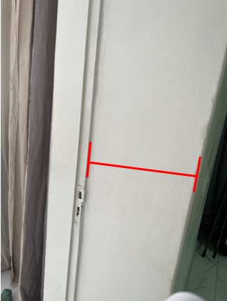Porta e parede interna. Fonte: Autor, 2025.
De maneira concomitante, nota-se a presença de muitos arcos na fachada do edifício. Os arcos são estruturas arquitetônicas usadas desde a antiguidade, especialmente na arquitetura romana clássica, e uma de suas funções é distribuir o peso de uma construção uniformemente. As janelas são em arco clássico, caracterizadas por sua moldura arredondada e detalhes ornamentais.
As janelas apresentam abas de veneziana, o que permite a regulagem da entrada de luz e ventilação. Além disso, as janelas circuladas em vermelho apresentam retângulos, quadrados e trapézios posicionados em um trapézio maior. Também há vitrais decorativos, indicados em verde, com curvas e elipses. A equação da elipse se dá por: x²/a²+y²/b²=1, onde a é o semieixo maior e b o semieixo menor. No caso analisado, b > a, pois ela é mais alongada no eixo vertical(y). As curvas se dão de maneira espelhada no eixo horizontal e assemelham-se a uma função logarítmica: f(x) = loga(x).
Na parte superior das janelas e abaixo delas, indicadas em amarelo, há meias elipses, no qual o eixo x > eixo y, o que torna elas mais “largas”. Os padrões intrínsecos na forma superior vão ao encontro do centro da base, lembrando uma flor. Enquanto nos inferiores, há 4 círculos congruentes e arco do ângulo nas extremidades.
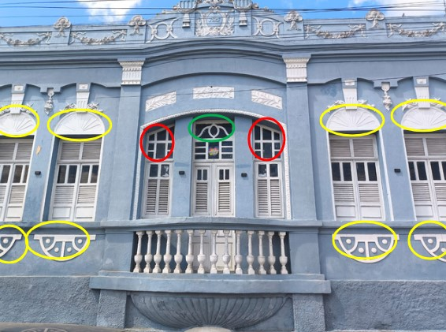Fachada principal do sobrado. Fonte: Autor, 2025.
A lateral do edifício apresenta 4 colunas de concreto com um acabamento simples, as mesmas possuem a base mais larga (indicada em verde) para proporcionar maior estabilidade. Possuem o formato de prisma retangular, para calcular o volume delas seria necessário calcular o volume da base e do corpo separadamente, devido à diferença de largura. A fórmula utilizada para realizar este cálculo é:
Vprisma retangular = comprimento × largura × altura
O topo, ligado ao teto, mostra-se como um prisma trapezoidal, no qual:
Vprisma trapezoidal = área do trapézio (A) × profundidade
A = ((base maior + base menor) × altura) / 2
Varanda com colunas de seção retangular. Fonte: Autor, 2025.
O portão de entrada apresenta um arco em forma de parábola com concavidade voltada para baixo, descrita pela equação:
O vértice da parábola se encontra no ponto mais alto do portão. Com relação aos padrões desenhados, há, basicamente, espirais (que dão um aspecto de fluidez) e “losangos arredondados” (semelhantes a elipses, diferenciando-se pela presença de pontas no sentido norte-sul).
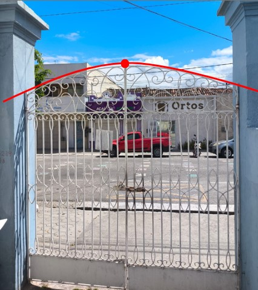Portão de entrada. Fonte: Autor, 2025.
No sobrado, existe uma mureta com 5 balaústres, sendo 2 diferentes, pois quebraram e tiveram de ser trocados. Como a casa foi construída há 100 anos, não foram encontrados balaústres do mesmo modelo. Também há um parapeito maior no segundo andar da edificação, todo composto pelos balaústres antigos. Enquanto na fachada todas as coluninhas são novas.
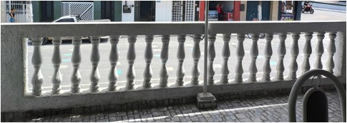Parapeito com balaústres antigos. Fonte: Autor, 2025.
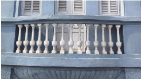Fachada com balaústres novos. Fonte: Autor, 2025.
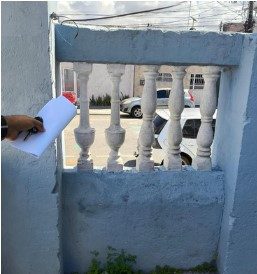Mureta. Fonte: Autor, 2025.
Escola Irineu Joffily
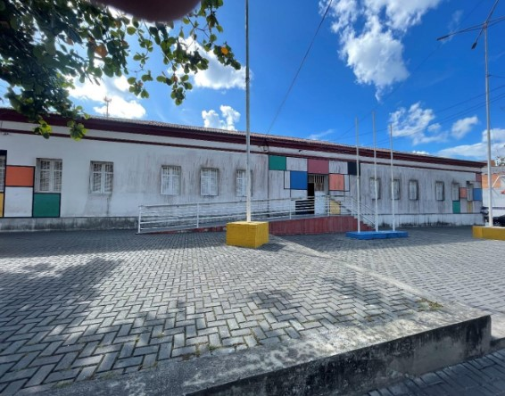Fachada frontal da Escola Irineu Joffily, situada em Esperança-PB. Fonte: Autor, 2025.
A escola estadual Irineu Joffily está situada na R. Juviniano Sobreira, oferecendo educação gratuita para os alunos de nível fundamental e médio. Seu edifício foi inaugurado em 09 de junho de 1932 e atualmente ele possui 93 anos (2025). Ademais, o prédio apresenta um formato retangular e passou por diversas reformas e ampliações. O que demonstra sua estabilidade e conservação. Seu formato se manteve o mesmo desde sua fundação, como é perceptível na imagem abaixo.
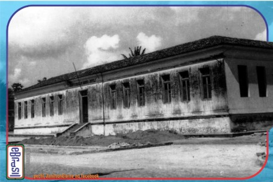SD Grupo já com calçamento em parte do seu entorno. FONTE: JanilsonElaine, via Facebook. TRATO: Evaldo Brasil.
Segundo Cardoso A, G. A (1988, P.08) o uso de telhas coloniais é um elemento construtivo regional, que se adaptava ao clima tropical. Mas, não é de uso característico moderno por não ser formado por jogos de volumes sobrepostos e não possuir linhas retas e bem definidas (conforme o que foi mencionado anteriormente). Esse tipo de telhas é predominante na construção. Conforme o exposto abaixo.
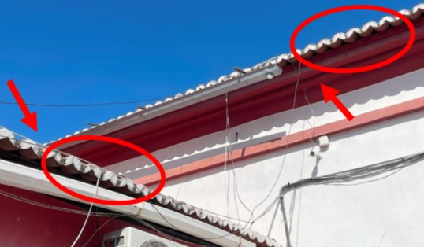Parte interna da Escola Irineu Joffily, situada em Esperança-PB. Fonte: Autor, 2025.
O uso do piso interno do bloco de aulas mais alto que o nível térreo demonstra o resguardo de alagamentos que são comuns naquela região por se situar em uma área de depressão relativa. Segundo Jiang, K. A. H (2023, P.01), esse acúmulo de água da chuva é explicado, pois as áreas de depressão superficial possuem energia potencial gravitacional baixa em relação ao seu entorno, e a água tende a se mover naturalmente em direção aos locais que possuem baixa energia potencial gravitacional.
O módulo da energia potencial gravitacional é dado por: Epg = m g h, onde m é a massa, g é a aceleração da gravidade na Terra e h é a altura em relação ao nível de referência. O conhecimento desse módulo só é possível por conta do uso da matemática.
O uso do piso elevado é uma característica presente tanto em todo o bloco, como pode ser observado na imagem da fachada principal, quanto nas salas de aula, conforme mostrado na imagem abaixo.
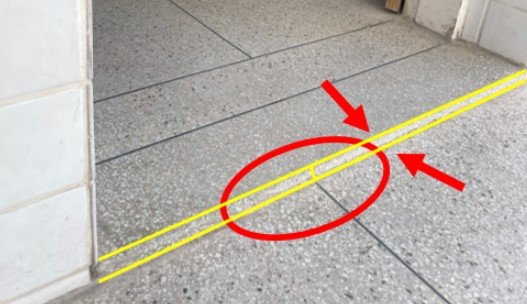Bloco de aulas da Escola Irineu Joffily, situada em Esperança-PB. Fonte: Autor, 2025.
Ademais, é importante refletir sobre a escolha da estrutura da caixa d’água ser quadrada. Isso se deve ao fato de que as caixas com estrutura quadrada são mais simples de construir e oferecem estabilidade suficiente para armazenar líquidos quando o volume não é tão elevado, já que a pressão hidrostática dos mesmos não é suficiente para comprometer a integridade da estrutura. Do ponto de vista matemático, as linhas retas e os ângulos retos da base quadrada favorecem a distribuição uniforme da carga e reduzem a complexidade na construção das estruturas de apoio.
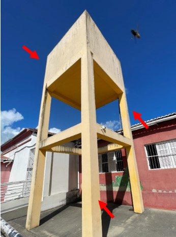Parte interna da Escola Irineu Joffily, situada em Esperança-PB. Fonte: Autor, 2025.
Mercado Público
O mercado público também é uma construção antiguíssima da cidade de Esperança, localizado na Rua José de Andrade — popularmente conhecida como rua da feira. Ele abriga o comércio de diversos produtos, como grãos, roupas e, principalmente, carnes. Para comercializar no local, é necessário obter uma autorização da prefeitura, garantindo o direito a um ponto.
Observa-se a presença de colunas não convencionais, cuja parte superior é mais alargada. Essa característica contribui para a melhor distribuição do peso da cobertura, além de ampliar a área de contato entre as vigas e a coluna. De cima para baixo, essa parte aparenta ser a junção de um prisma de base retangular e dois prismas trapezoidais. A base inferior das colunas, por sua vez, possui formato prismático simples, com corpo mais estreito, configurando um apoio direto ao solo.
Para a obtenção do volume total das colunas, recomenda-se a análise separada de cada segmento e a aplicação de fórmulas de volume para prismas retangulares e trapezoidais:
Vprisma trapezoidal = área do trapézio (A) × profundidade
A = ((base maior + base menor) × altura) / 2
A soma dos volumes individuais fornecerá a estimativa total do material utilizado.
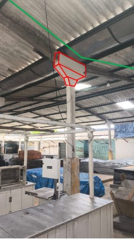Coluna de sustentação. Fonte: Autor, 2025
O telhado do ambiente apresenta desníveis perceptíveis — ele desce e volta a subir — o que sugere que houve a junção de galpões distintos ao longo do tempo. A sustentação da cobertura é garantida pelas colunas e por vigas de madeira localizadas nas bordas superiores da construção. Essas vigas formam triângulos — figura geométrica reconhecida por sua elevada estabilidade estrutural e resistência à deformação — sendo visível, por estimativa visual, um ângulo entre 30° e 60° entre seus elementos. É válido ressaltar que todas essas estruturas de suporte se repetem de maneira periódica para proporcionar maior segurança.
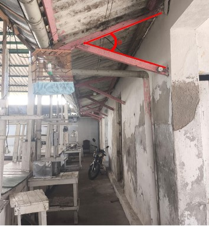Estrutura de madeira para suporte. Fonte: Autor, 2025.
A fachada do mercado popular é composta por formas retangulares: portas, pilares e vãos de entrada. Inclusive, os pilares a frente servem para sustentar uma estrutura com a função semelhante à de um toldo: proteger do sol, haja vista as mercadorias expostas. É possível calcular a área da mesma ao multiplicar a largura pela altura, o que é útil para calcular pintura, revestimentos etc. Outrossim, percebe-se pouquíssima preocupação estética e um foco total na função e eficiência do espaço, sendo um claro exemplo de arquitetura utilitária.
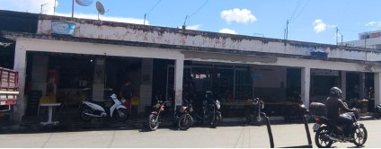Fachada do mercado público. Fonte: Autor, 2025
Hospital municipal de Esperança
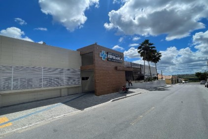Fachada frontal do hospital municipal de Esperança-PB. Fonte: Autor, 2025.
O hospital municipal Dr. Manoel Cabral é uma importante construção predial na cidade de Esperança-PB. Sendo utilizado pela secretaria municipal de saúde da prefeitura municipal e atendendo à população com os serviços ofertados. O edifício passou por uma reforma e ampliação.
Segundo Silva, G. L (2017, P.06), uma característica marcante das construções modernas são os jogos de volumes cúbicos sobrepostos. Essas estruturas são compostas por linhas retas e bem definidas, aumentando a funcionalidade da mesma. Ambos são encontrados no prédio e podem ser observados através da imagem.
Outra manifestação matemática fundamental que pode ser observada é o ladrilhamento com utilização de polígonos regulares. Com base em Barreto, G. T (2024, P.11) é possível afirmar que o ladrilhamento é uma técnica milenar que é utilizado não só na matemática como na engenharia, arquitetura, arte e design. Além disso, a mesma também afirma que os polígonos desempenham um papel crucial nessa técnica devido à sua capacidade de preencher o plano sem deixar espaços vazios, na criação de superfícies e no uso de distribuição de cargas de forma eficiente, aumentando a resistência e a durabilidade das construções que utilizam desse recurso geométrico. Isso é devido suas características, no que tange a uniformidade de seus lados, e dos seus ângulos.
O ladrilhamento só é possível se a soma dos ângulos internos no ponto do vértice comum for igual a 360°. A equação que determina as condições possíveis do ladrilhamento é:
(n-2)180°k/n=360°, onde n = número de lados e k = números de polígonos que se encontram em torno de um vértice.
Um exemplo de ladrilhamento é a própria fachada de vidro do hospital, formada por placas retangulares de vidro espelhado. Como é possível visualizar pela foto abaixo.
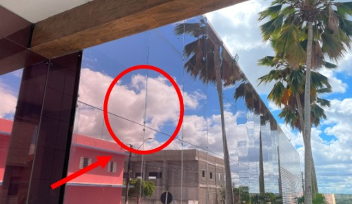Fachada de vidro do prédio do hospital municipal de Esperança-PB. Fonte: Autor, 2025.
Observa-se ainda o uso de bordas arredondadas nos pisos internos, gerando estrutura semelhante a um gráfico de um arco de circunferência, cuja equação é dada por: (x-a)²+(y-b)²=r², com domínio limitado ao quadrante equivalente ao arco.
Esse uso é para causar justamente o efeito contrário das figuras geométricas que formam ângulos retos quando combinadas no ladrilhamento. Segundo a RDC 50/2002 o alinhamento entre rodapé e parede é importante para prevenir o acúmulo de sujeira. No caso do hospital de Esperança eles foram além e deixaram as bordas arredondadas, prática que torna o ambiente ainda mais seguro para pacientes e profissionais de saúde de modo que a sujeira não se acumule. Conforme observado na imagem abaixo:
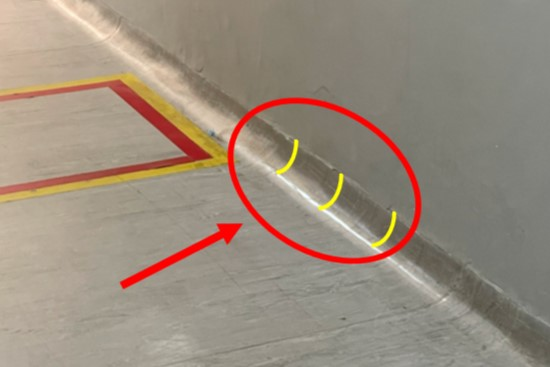Corredor do hospital municipal de Esperança-PB. Fonte: Autor, 2025.
Outra característica importante é a presença de desníveis e inclinações na parte antiga do prédio. Gerando retas inclinadas, com formato parecido com uma função afim, que é definida por: f(x)= ax+b. O que sugere que a edificação sofreu reformas estruturais. Como é possível observar pela imagem abaixo.
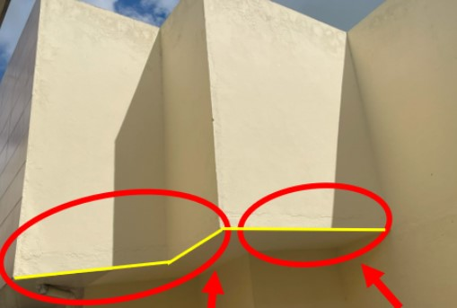Estrutura do hospital municipal de esperança. Fonte: Autor, 2025.